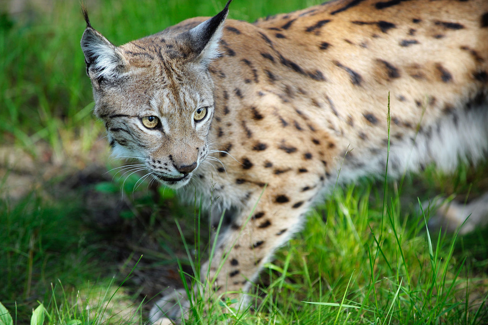
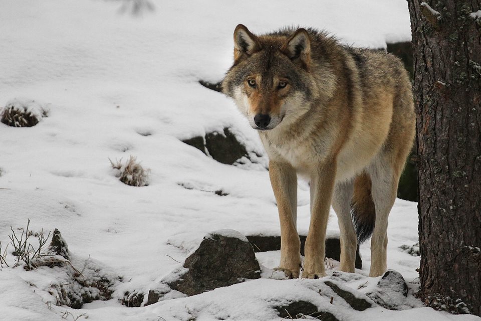
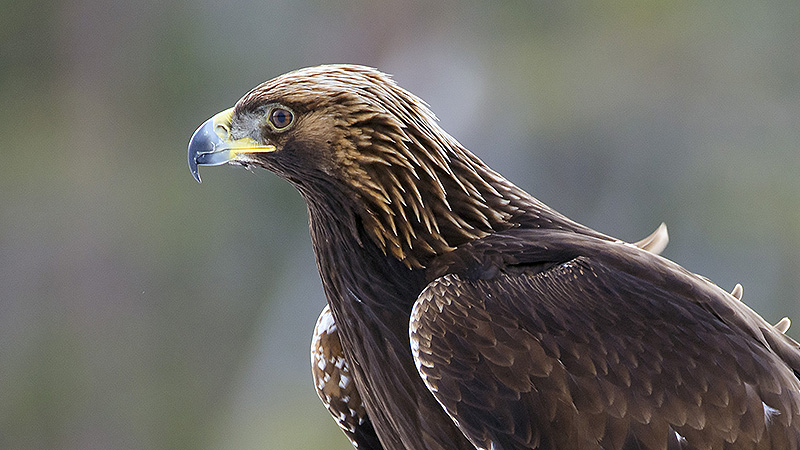
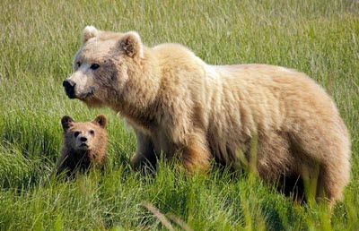
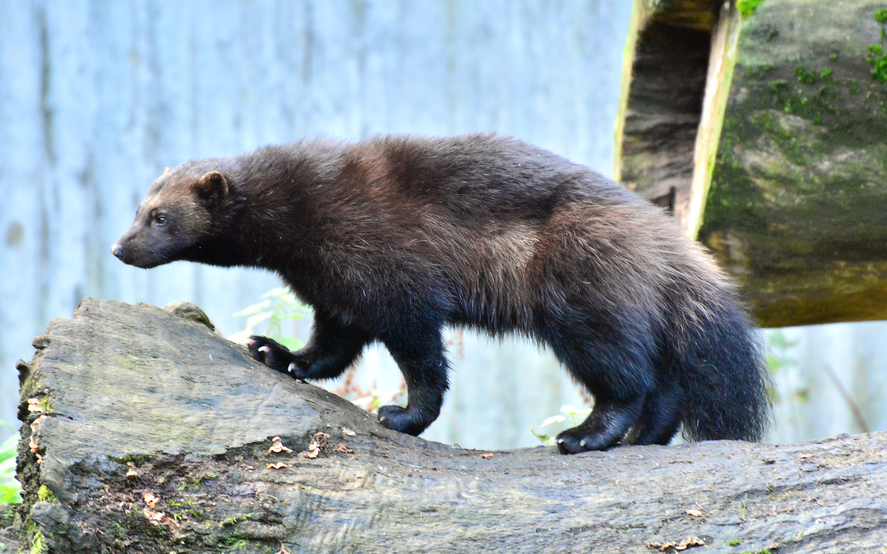
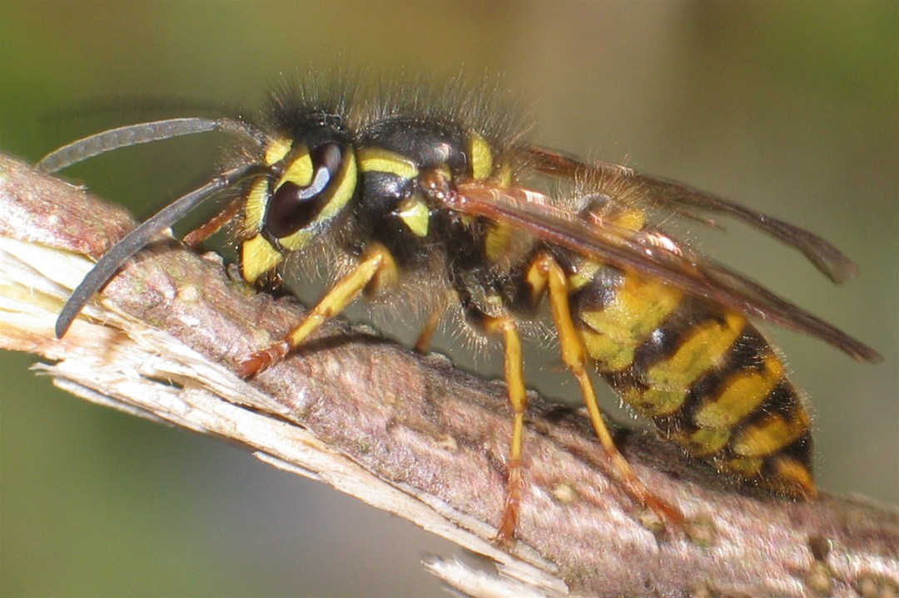

Lodjur

Lodjuret är Sverige och Nordens enda vilda kattdjur. Med sin korta svans och sina tofsar på öronen smyger den omkring i våra skogar. I Sverige har arten sakta återhämtat sig, men på andra håll i Europa är den fortfarande hotad.
Lodjur är nattaktiva och har utmärkt syn och hörsel. Likt andra kattdjur smyger de nära inpå sitt byte, tar ett snabbt språng och hugger bytet i strupen så det kvävs. I norra Sverige utgörs basfödan av ren medan vanligaste bytet längre söderut är rådjur. Lodjur kan även äta harar, bävrar och mindre älgar. Arten lever i stora revir i olika slags skogar där det finns tillräckligt med föda och området är ostört. En honas revir kan vara 30 - 40 km och en hanes mer än dubbelt så stort.
Parningstiden infaller i mars och honan är dräktig i 70 dagar. Honan söker upp en torr plats, under en gran eller en klippa, för att föda. Kullen består vanligen av två till tre ungar som föds blinda.
Förr jagades arten för sin fina päls skull. Under tidigt 1900-tal betalade staten ut skottpengar. Jakten gjorde lodjuret så sällsynt att det fridlystes 1928. Stammen repade sig varpå jakten startade igen. Arten fridlystes åter mellan 1986 och 1995. Därefter har det bara bedrivits skyddsjakt.
Lodjuren lever över hela det euroasiatiska barrträdsbältet från Norge till östra Ryssland ner till Himalaya och Svarta havet. De finns även i Alperna men stammen där är återinplanterad och härstammar från Karpaterna.
Varg

Vargar finns spridda över stora delar av världen och utseendet varierar mycket. Från helt vita polarvargar till Nordamerikas svarta skogsvargar. I Europa är vargens päls i huvudsak gråaktig, magen är blek eller ljust vit. Ryggen är oftast mörkare i nyans än svans, öron och nos. En hane väger mellan 20 - 60 kg och en hona mellan 18 - 55 kg. De är mellan 90 - 150 cm långa och har en mankhöjd på 66 – 81 cm.
Vargen är ett socialt däggdjur som lever i flockar på åtta till tolv djur. En vargflock är starkt hierarkisk och styrs av ett alfapar. Ylande läten spelar stor roll för den sociala kontakten inom flocken, men även som kommunikation mellan olika flockar. Vargen har en stor anpassnings-förmåga och kan leva i vitt skilda miljöer bara tillgången på bytesdjur är tillräckligt stor. Parning sker i februari - mars och efter 63 dygn föds fem till sex valpar i en lya som honan grävt.
Födan består av hjortdjur, främst älg, samt ren och rådjur, men även hare, bäver och grävling kan förekomma. Vargen är en ren köttätare och en vuxen varg äter i snitt två kilo kött per dag. För matsmältningen skull kan den ibland äta gräs och bär. Vargen jagar och dödar ibland tamboskap men framför allt jaktbart vilt. Den kan därför uppfattats som konkurrent till människan. På 1800-talet var vargen spridd över hela Sverige. Idag är dess utbredningsområde starkt begränsat till följd av avskogning, människans utbredning och i viss mån jakt.
Ungarna som vid födseln både är blinda och hårlösa föds i mitten av vintern – från slutet av december till februari – samtidigt som honan ligger i ide. Dräktigheten varar i ungefär 8-10 veckor och ungarna är små som råttor med en vikt på 250-650 gram vid födseln, bara några hundradelar av sin mors vikt.
Vargen har ett mycket stort utbredningsområde. Den återfinns i Europa, Asien, Kanada och norra USA. I Europa är den vanligast i Östeuropa.
Kungsörn

Kungsörnen är en av de största rovfåglarna i Europa. Den är 80 till 93 cm lång med ett vingspann på 185 till 220 cm. Som de flesta rovfåglar är honan större än hanen. Honan väger ca 5 Kg och hanen ungefär 4 Kg.
Kungsörnen har en mörkbrun fjäderdräkt och vuxna fåglar har gråa insalg på kroppen och vingarna. Ungfåglar (upp till sex år) har vita fält på vingarna och stjärten är vit med ett svart ändband. Oavsett ålder har kungsörnen en gyllengul hjässa och nacke. Det finns fem eller sex olika underarter beskrivna som skiljer sig i storlek och färg. Man hör sällan kungsörnen men hanen har ett falkliknande läte medan honan har ett vissland läte.
Kungsörnen är långlivad och den äldsta kända individen blev 32 år. Den lägger ett till två ägg och ibland till och med tre ägg i ett risbo som den bygger i ett träd eller på en klippa. Äggen ruvas i ungefär sex veckor och ungarna blir flygga efter ungefär tio veckor. Ungarna matas i boet men även i en eller två månader efter att de lämnat boet.
Födan varierar beroende på livsmiljön. I fjällen är dal- och fjällripa huvudfödan medan kungsörnarna i skogslandskapen i huvudsak lever på skogshare, tjäder och orre. Kungsörnen äter också änder, kråkor och andra medelstora däggdjur och fåglar. Även kadaver är en viktig födoresurs.
Kungsörnen finns på norra halvklotet och i Sverige främst i Norrland där 90% av beståndet häckar. Förekomsten i Svealand och Götaland består av fåtaliga bestånd förutom på Gotland där Kungsörnensbeståndet är tätt i jämförelse med andra platser i Sverige och världen. I Sverige är den årliga föryngringen mellan 88 och 235 lyckade häckningar. Häckningsframgången är mycket beroende av sorktillgången.
Björn

Brunbjörnens päls kan variera från ljust grågul till nästan svart. Längden på pälsen har precis som färgen stor variation, det finns både brunbjörnar med kort eller långhårig päls. Många unga björnar har en tydlig ljus krage runt halsen.
Björnen räknas som rovdjur även om dess föda till större delen består av vegetabilier. Under våren äter björnen mycket rötter, nyvuxet gräs, örter och myror för att senare under sommaren övergå mer till "gröna växter" av olika slag. Inför vintern behöver björnen äta upp sig och har då en kost som till stor del består av bär. Inslag av animalisk föda finns under hela den vakna tiden på året. Även större djur som ren och älg kan ingå i björnens meny. Vanliga spår efter björnar är uppvälta stenar samt bit- och klösmärken på vegetationen.
Vanliga spår efter björnar är uppvälta stenar samt bit- och klösmärken på vegetationen. Spillningen, ofta lätt identifierbar om vad björnen ätit då maten bearbetas dåligt genom björnens tarmkanal. I sin jakt på myror gräver björnen gärna ut myrstackar, vanligtvis uppifrån där rester av stacken kan vara spridda metervis åt sidorna.
Mellan oktober/november till april ligger björnen i ide. Då äter eller dricker den ingenting och många kroppsfunktioner är starkt nedsatta. Både matsmältning och urinproduktion upphör helt. Hjärtfrekvens sjunker från normala 40 slag/minut till cirka 10 slag/minut samt kroppstemperaturen sjunker från 38° C till ungefär 33-34° C.
Järv

Järven är kraftigt byggd med korta ben och stora tassar. Ögon och öron är små. Svansen är kort och yvig. Den tjocka pälsen är mörkbrun med ljusare strimmor längs sidorna. Hanen är några kilo tyngre än honan.
När järvar jagar stora byten hoppar de upp på ryggen och biter djuret i nacken. Om de lyckas dräpa en ren eller en älg, sliter de sönder bytet och gömmer det. Vid varje jakttillfälle dödar och gömmer järven så många byten den kan. Det har gjort att järven uppfattats som glupsk. Ryktet om dess glupskhet stämmer dock inte alls. Den gömmer sina byten noga för att kunna äta vid ett senare tillfälle. Födan består av ren, hare, älg, räv och fågel. Järven kan även äta bär och andra vegetabilier.
Parningstiden infaller mars till augusti. Järven har en så kallad "fördröjd fosterutveckling" vilket innebär att fostren börjar utvecklas först nästa vår. Valparna föds i februari till mars. De är mycket ljusa till färgen för att inte synas i snön.
Järven har under åren varit ganska illa omtyckt eftersom den konkurrerade med människan om bytesdjur och tog renar. Den har jagats hårt, med skottpengar från svenska staten, ända fram till 1969 då den fridlystes. Efter fredandet ökade den svenska järvpopulationen för att sedan minska igen under 80-talet. Under senare år har järven åter ökat i antal.
Järven finns runt hela norra halvklotet i den nordligaste delen av barrskogsbältet och i fjällmiljöer. De flesta svenska järvpar som får ungar lever på fjället och förutom dessa finns ett mindre antal i Norrlands skogsland.
Geting

Getingar är rovdjur och fångar bland annat mängder av insektslarver som de utfodrar sina egna larver med. Vilka insektsarter de tar mest beror på den tillgång som finns i de närmaste omgivningarna.
De vuxna dricker dock främst nektar och en sockerhaltig saliv som de egna larverna avger, men de äter även frukt, kött och fisk. På sensommaren koncentreras ofta getingar kring mogna frukter och andra sötsaker.
Getingarna har en världsvid utbredning och det finns cirka 3 250 olika arter. De flesta arterna finns både i tropiska och subtropiska områden. 12 arter av dem som vi kallar för getingar, det vill säga de sociala getingarna, sköter om sin egen avkomma. Av de solitära getingarna finns det 37 arter i Sverige. Dessutom finns ytterligare en art som tillhör pappersgetingarna.
Getinghonan, drottningen, som blev befruktad föregående höst, kommer fram på våren efter att ha övervintrat på en skyddad plats. Hon börjar ganska omgående bygga ett nytt bo med en stomme av tuggat träd. Inuti det nya trähöljet bygger hon upp celler där hon lägger ett ägg i varje cell.
Hos getingar, liksom hos andra gaddsteklar, är äggläggningsröret ombildat till en tagg som är i förbindelse med en giftblåsa. Giftet är komplext, och består av en rad aminer, peptider och proteiner, vilka har en starkt smärtframkallande verkan. Gadden sitter i bakändan på getingen. Taggen saknar hullingar och getingar kan till skillnad från tambiet sticka flera gånger.